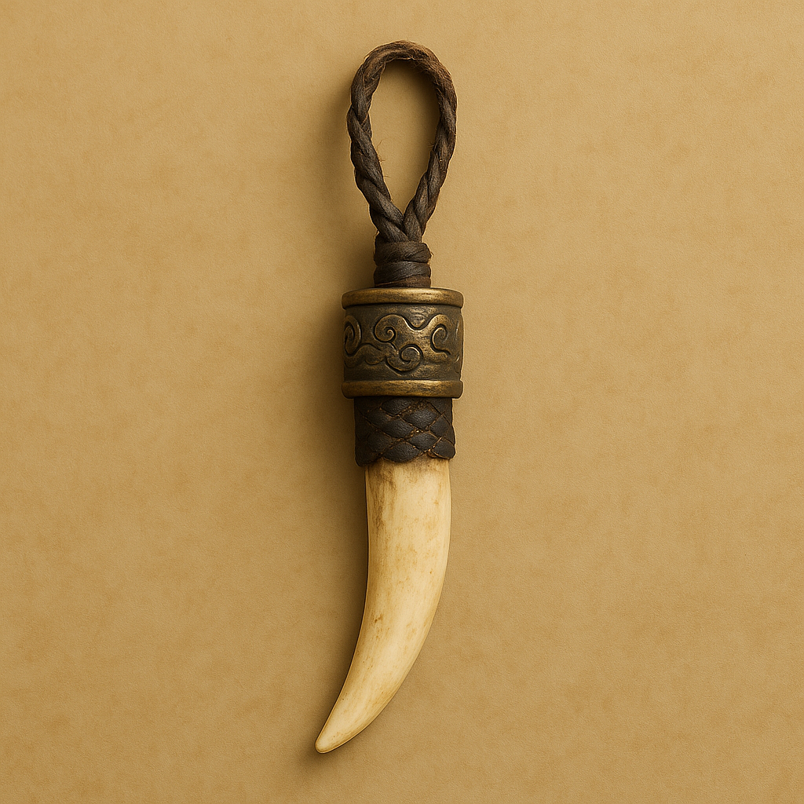
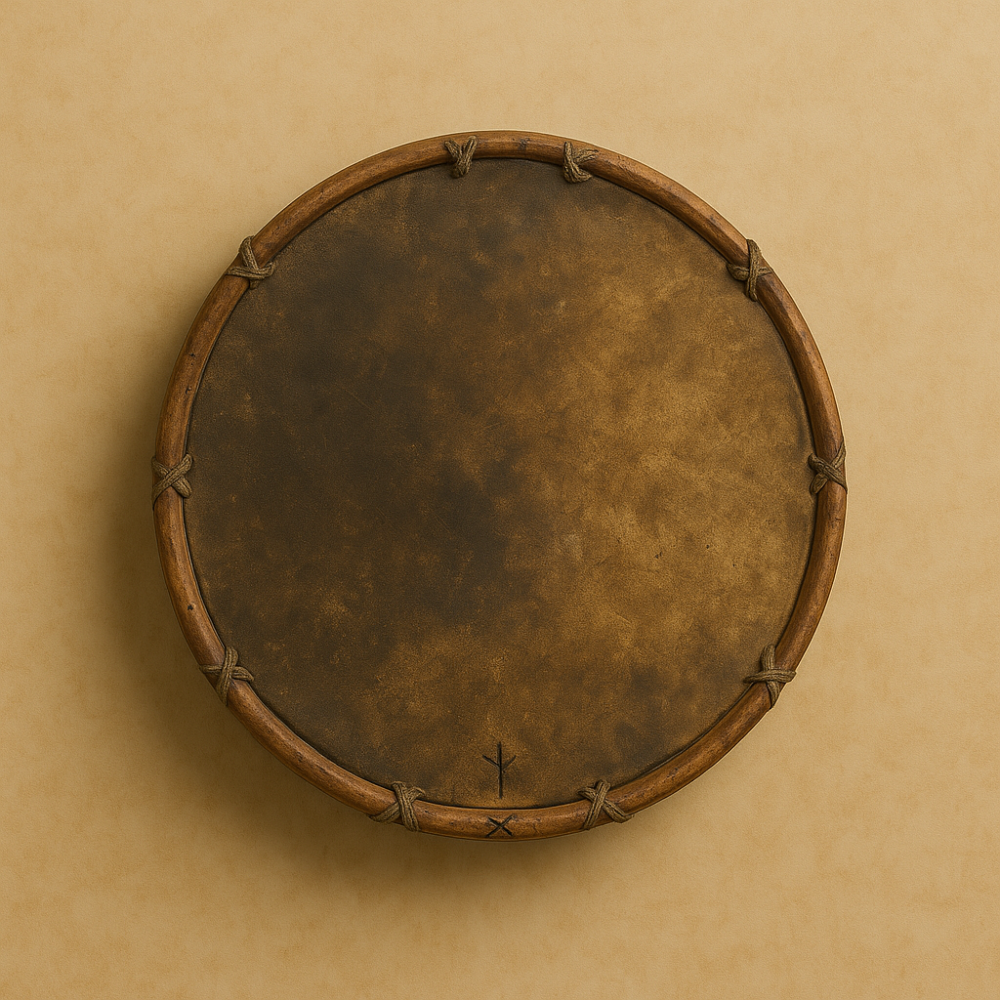
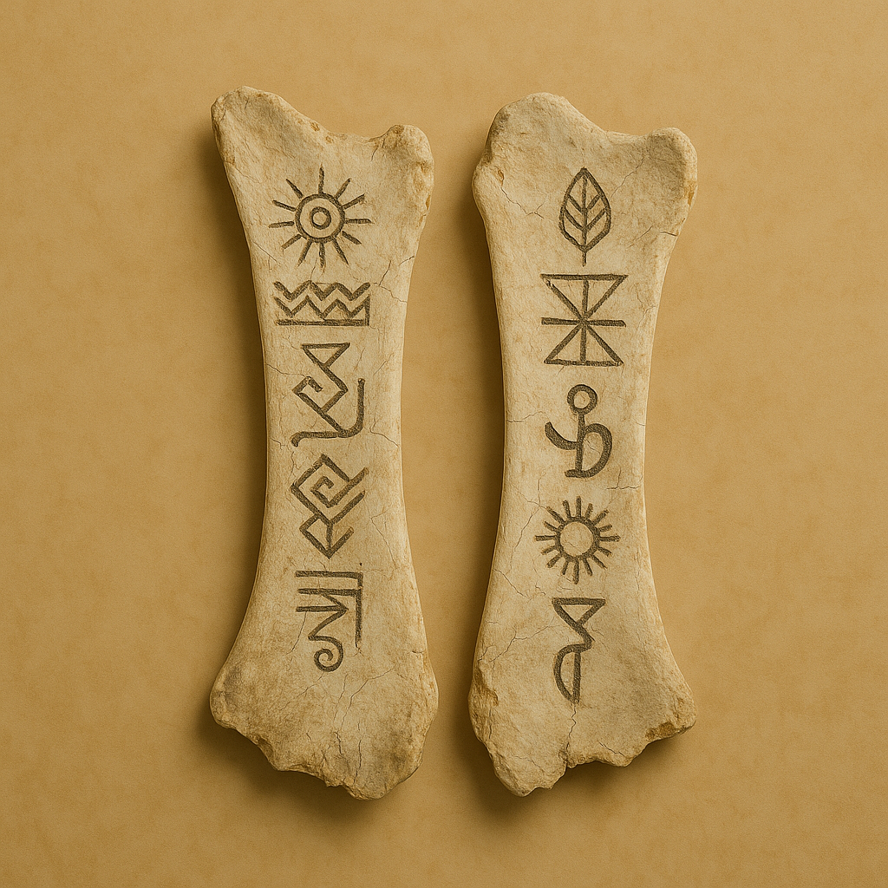
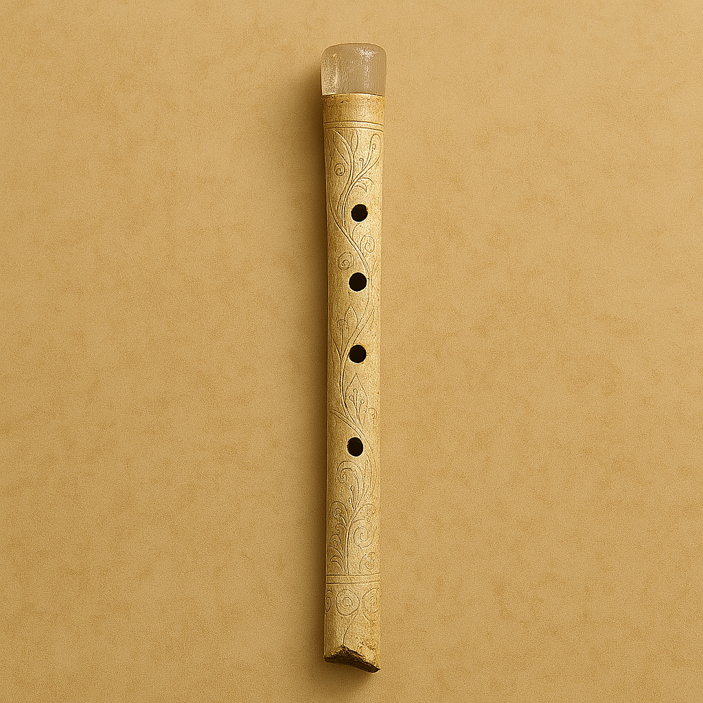

Special Exhibition
The content in this gallery was entirely created by AI under human direction. It was then curated, reviewed and edited by a human before being published. AI contributed to the concept, the written and visual content, and provided coding guidance to enhance the site’s layout and design.
Nomadic Burial Finds

Echo Fang Pendant

Steppe Shadow Drum

Wind Oracle Bones
